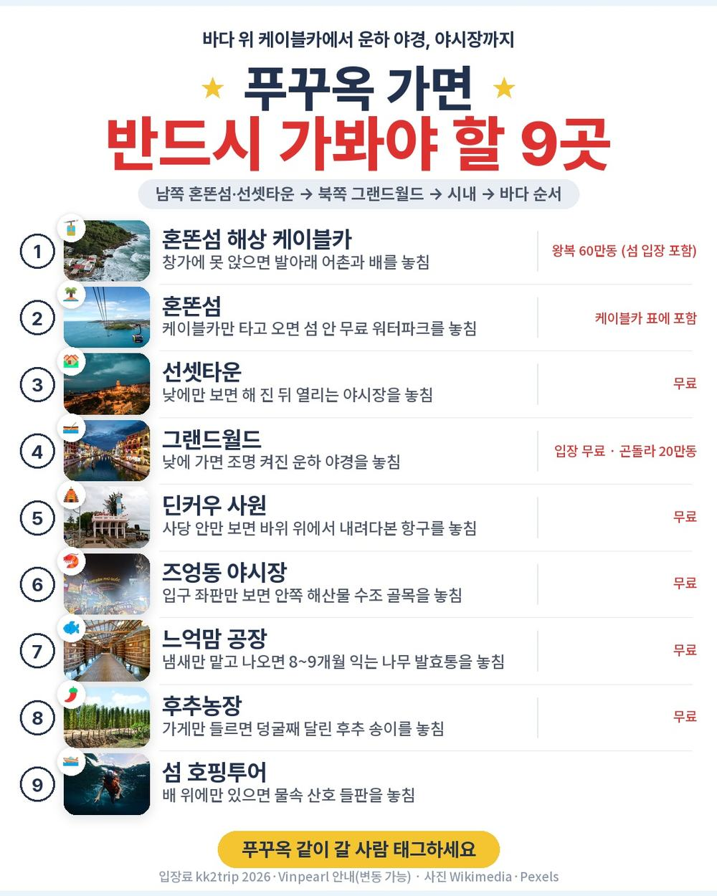
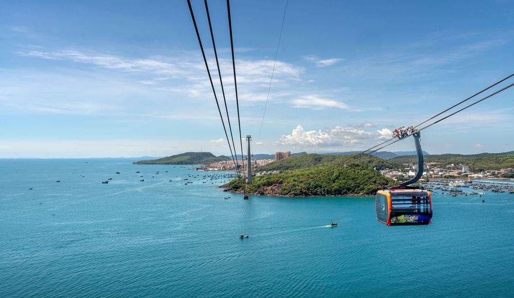
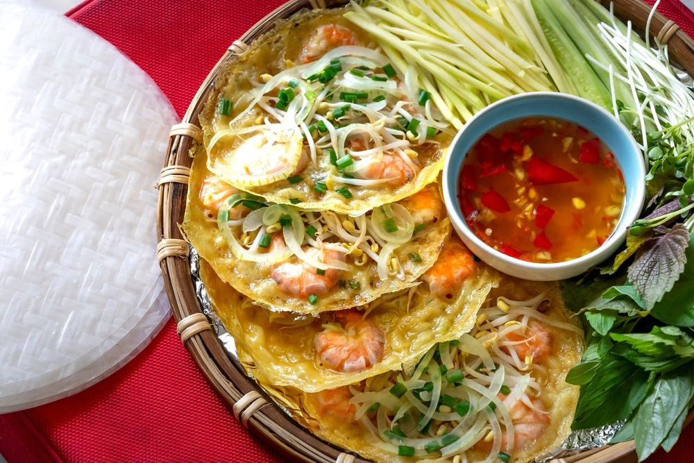
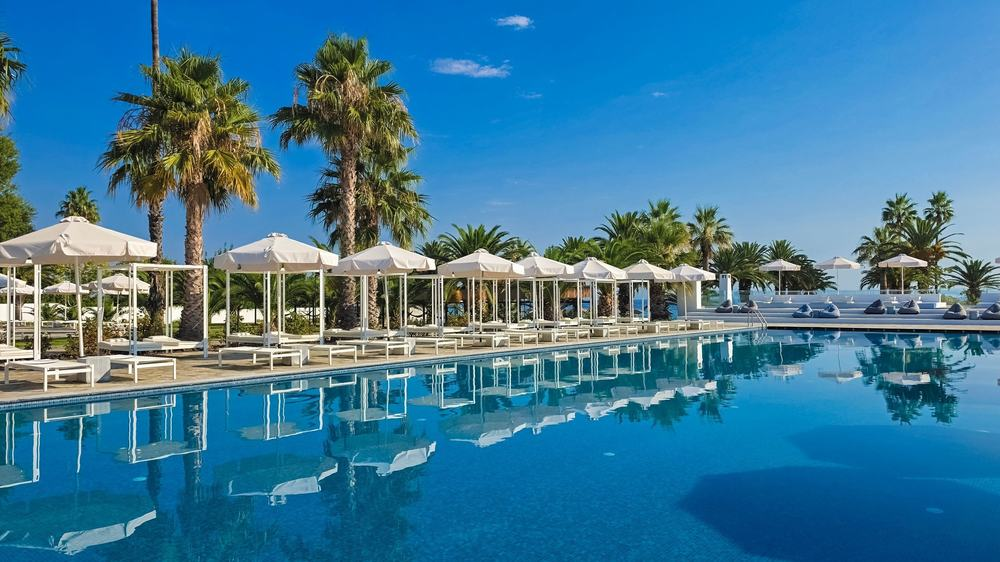
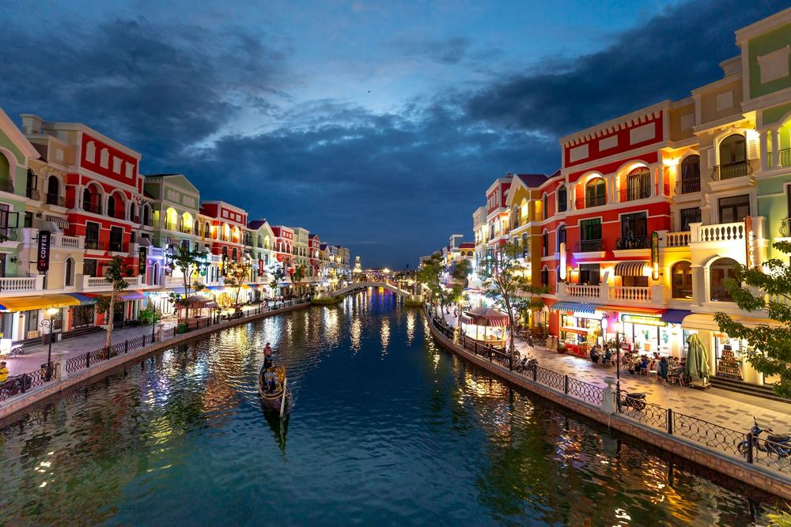
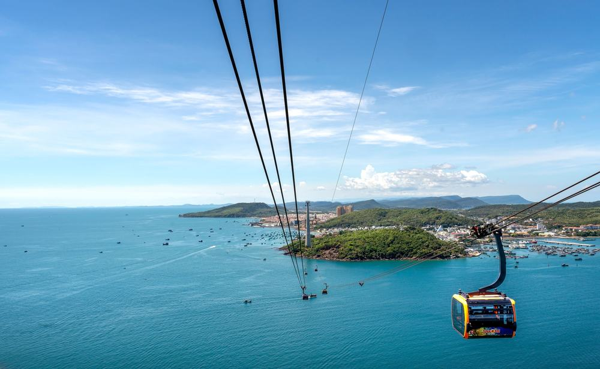
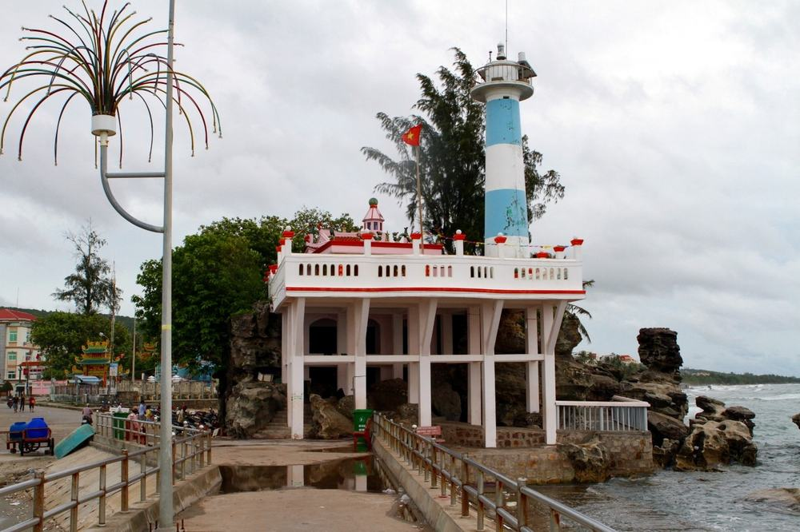
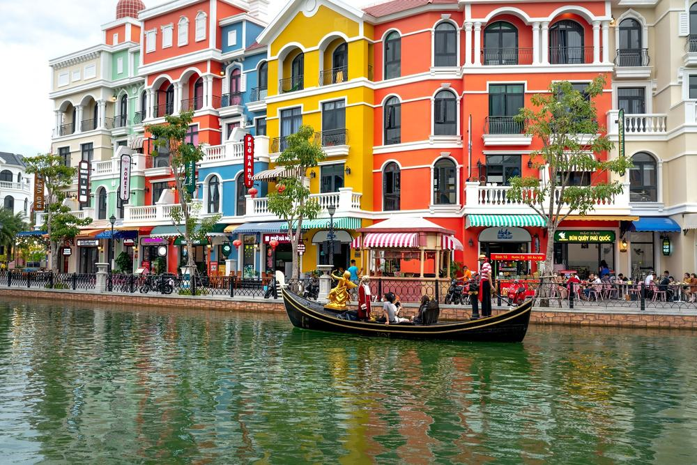

부모님 모시고 푸꾸옥을 알아보면 케이블카, 호핑, 마사지가 전부 따로 붙는 옵션인 상품이 많음. 하나씩 더하다 보면 처음 본 값과 한참 멀어짐.
그러다 노랑풍선 상품을 원문까지 읽어 봄. 62만 9,900원에 혼똔섬 해상 케이블카, 아일랜드 호핑투어, 전신마사지 90분이 다 값 안에 들어 있음. 그랜드월드 나이트투어와 야시장 두 곳, 시내 관광 네 곳도 들어감. 대신 비행기가 왕복 다 밤이고 쇼핑센터가 두 번 있음.
결론 — 추천. 바다 위 케이블카·혼똔섬·호핑·마사지 90분·그랜드월드·야시장 두 곳이 한 값에 든 일정임. 다만 밤 비행기 두 번이 힘든 분, 쇼핑센터 들르는 시간이 싫은 분, 가이드가 늘 곁에 있어야 편한 분은 아님.
62만 9,900원이 어디에 들어갔는지, 현지에서 더 내는 돈은 얼마인지 하나씩 뜯어봤음.
| 항목 | 내용 |
|---|---|
| 가격 | 1인 629,900원 (성인 · 소아 동일 · 11월 출발 기준) |
| 여행사 | 노랑풍선 |
| 항공 | 트리니티항공 직항 · 인천 19:00 → 푸꾸옥 23:05 / 푸꾸옥 00:05 → 인천 07:20 |
| 숙소 | 무엉탄 럭셔리 푸꾸옥 호텔 또는 동급 3박 (2인 1실, 세 밤 같은 호텔) |
| 일정 | 3박 5일 · 전용 미니버스 · 한국어 가이드 · 식사 8회 · 쇼핑 2회 |
| 가는 곳 | 혼똔섬 해상 케이블카 · 혼똔섬 · 선셋타운 부이페스트 바자 · 아일랜드 호핑투어 · 그랜드월드 · 후추농장 · 벌꿀농장 · 딘커우 사원 · 느억맘 공장 · 즈엉동 야시장 |
▶ 내 출발일 오늘 기준 요금 확인 (제휴 링크 · 예약 시 수수료를 받으며 가격은 같습니다)
▶ 10월 18일 기준 푸꾸옥 패키지 최저 62만 9,900원부터 — 출발일별 값 한 화면에: 비교 페이지
| 순서 | 다루는 것 | 한 줄 결론 |
|---|---|---|
| 1 | 구성 뜯어보기 | 케이블카·호핑·마사지 포함, 현지 추가금은 가이드 경비 50달러 |
| 2 | 일정 살펴보기 | 2일차는 섬, 3일차는 바다, 4일차는 시내와 야시장 |
| 3 | 자유여행 VS 패키지 | 직접 짜면 153만원 | 항공권만으로 패키지 값을 넘는 날이 대부분 |
요약 — 직항 왕복·한 호텔 3박·식사 8회·케이블카와 혼똔섬·호핑투어·마사지 90분·야시장 두 곳·그랜드월드·시내 관광·가이드·보험이 들어 있음. 현지에서 더 내는 건 가이드 경비 1인 50달러와 마사지 팁 4달러임.

포함 항목을 정리하면 이럼.
- 트리니티항공 인천–푸꾸옥 직항 왕복 + 유류할증료·세금
- 무엉탄 럭셔리 푸꾸옥 호텔 또는 동급 3박 (2인 1실, 세 밤 같은 호텔)
- 식사 8회 (호텔 조식 3 · 특식 5)
관광은 이렇게 들어 있음.
- 혼똔섬 해상 케이블카 + 혼똔섬 5~6시간(워터파크·놀이기구·썬베드 무료)
- 아일랜드 호핑투어(스노클링 · 선상 미니 줄낚시 · 선상식) · 전신마사지 90분
- 부이페스트 바자 야시장 · 그랜드월드 나이트투어 · 즈엉동 야시장 · 킹콩마트 · 후추농장 · 벌꿀농장 · 딘커우 사원 · 느억맘 공장 · 여행자보험
상품 안내에 적힌 옵션가로 더하면 이 포함분이 290달러 상당임. 케이블카 60달러, 호핑 70달러, 마사지 40달러, 야시장·그랜드월드·시내 관광이 나머지임.
출발일별 요금 확인하기
https://naver.me/5CCSTnx0

식사는 8회임. 호텔 조식 3번에 특식 5번이고, 특식은 반쎄오·선상식·쌈밥·분짜와 짜조·김치찌개임. 한식이 두 번 들어 있어 부모님 입맛 걱정이 덜함.
빠지는 끼니는 2일차 혼똔섬 점심 한 번임. 섬 안 식당에서 사 먹으면 됨. 1일차는 밤 도착, 5일차는 새벽 도착이라 식사가 없음.

세 밤 다 무엉탄 럭셔리 푸꾸옥 호텔 또는 동급임. 출발 2~3일 전에 배정이 전화나 문자로 옴. 짐을 한 번만 풀면 됨.
혼자 방을 쓰면 250,000원이 붙음. 세 명이면 한 방에 엑스트라 베드를 넣는데 추가 비용은 없고 방이 조금 좁아짐.
| 항목 | 금액 | 비고 |
|---|---|---|
| 가이드·기사 경비 | 약 140,000원 | 1인 50달러 × 2인 (성인·아동 동일) |
| 마사지 매너팁 | 약 11,000원 | 1인 4달러 × 2인 |
| 혼똔섬 점심 | 개인 | 2일차 1회 자유식 |
| 라커·타월 | 개인 | 라커 3만~6만동 · 타월 5만동, 동 현금만 |
| 합계 (2인) | 약 151,000원 | 상품가 125만 9,800원 + 약 15만원 = 약 141만원 |
두 사람이면 약 141만원, 한 사람으로 치면 약 70만원임. 선택관광 목록도 있는데, 안 하면 호텔 자유시간이나 근처 대기라 고르는 사람만 냄.
1절 자주 나오는 질문
Q. 마사지는 정말 포함인가요?
A. 포함임. 2일차 혼똔섬에서 나온 뒤 전신마사지 90분이 일정에 있음. 매너팁 4달러만 따로 냄. 아이는 마사지에서 빠짐.
Q. 가이드 경비는 따로 내나요?
A. 냄. 1인 50달러를 현지에서 냄. 상품가 밖이고 성인·아동 같음.
Q. 쇼핑은 몇 번인가요?
A. 2회임. 침향·노니 매장, 커피·잡화·망고 매장이고 각각 약 1시간임. 사지 않아도 되고 산 물건은 환불 규정이 있다고 안내함.
요약 — 1일차 밤 도착, 2일차 케이블카·혼똔섬·마사지·부이페스트 바자, 3일차 호핑투어·그랜드월드, 4일차 쇼핑·농장·사원·느억맘 공장·즈엉동 야시장 뒤 밤 비행기, 5일차 아침 인천 도착.

| 일차 | 가는 곳 | 식사 | 숙소 |
|---|---|---|---|
| DAY 1 | 인천 19:00 출발 → 푸꾸옥 23:05 도착 → 공항 밖 가이드 미팅 → 호텔 | 없음 | 무엉탄 럭셔리 또는 동급 |
| DAY 2 | 혼똔섬 해상 케이블카 → 혼똔섬 5~6시간 → 전신마사지 90분 → 부이페스트 바자 야시장 | 조 호텔식 · 석 반쎄오 | 무엉탄 럭셔리 또는 동급 |
| DAY 3 | 아일랜드 호핑투어(스노클링·줄낚시) → 그랜드월드 나이트투어 | 조 호텔식 · 중 선상식 · 석 한식 | 무엉탄 럭셔리 또는 동급 |
| DAY 4 | 쇼핑센터 2곳 → 후추농장 → 벌꿀농장 → 딘커우 사원 → 느억맘 공장 → 킹콩마트 → 즈엉동 야시장 → 공항 | 조 호텔식 · 중 현지식 · 석 한식 | 기내 |
| DAY 5 | 푸꾸옥 00:05 출발 → 인천 07:20 도착 | 없음 | — |
| 일차 | 버스 이동 | 걷기 | 포함 식사 |
|---|---|---|---|
| DAY 1 | 약 0.3시간 | 적음 | 포함 끼니 없음 |
| DAY 2 | 약 1시간 | 보통 | 조 호텔식 · 석 현지식 |
| DAY 3 | 약 1시간 | 보통 | 조 호텔식 · 중 선상식 · 석 한식 |
| DAY 4 | 약 1.5시간 | 보통 | 조 호텔식 · 중 현지식 · 석 한식 |
| 합계 | 약 3.8시간 | - | 8끼 (호텔식 3 · 현지식 3 · 한식 2) |
요약 — 버스 이동은 4일 동안 약 3.8시간, 포함 식사는 8끼(호텔식 3 · 현지식 3 · 한식 2)임. 가장 많이 걷는 날은 DAY 2임.

케이블카는 총 7,900m로 바다 위를 한참 건넘. 탑승장에서 받은 표는 돌아올 때도 필요하고, 잃어버리면 장당 40달러를 다시 냄.
섬 안 워터파크·놀이기구·구명조끼·썬베드는 무료임. 가이드는 섬 안에 들어가지 않음 — 만날 시간과 장소를 케이블카 타기 전에 정해 두면 됨. 비가 오면 혼똔섬 대신 마사지 1시간과 한정식 점심으로 바뀜.

3일차는 40인승 목선을 타고 나가는 호핑투어임. 스노클링과 미니 줄낚시를 하고 점심은 배 위에서 먹음. 가이드 대신 영어가 되는 업체 직원이 같이 타고 구명조끼를 줌. 밤엔 베네치아를 본뜬 그랜드월드를 걸음(입장 무료, 곤돌라 20만동).
4일차는 체크아웃 뒤 시내를 돌고 밤 비행기를 탐. 느억맘은 생선과 소금만으로 약 8~9개월 발효시킨다고 함. 4일차 밤은 호텔이 없음 — 갈아입을 옷을 작은 가방에 따로 넣어 두면 편함.
2절 자주 나오는 질문
Q. 비행기는 몇 시인가요?
A. 트리니티항공 직항이고 인천 19:00 출발 → 푸꾸옥 23:05 도착, 귀국은 푸꾸옥 00:05 출발 → 인천 07:20 도착임. 왕복 다 밤 비행기임.
Q. 수영을 못 해도 호핑투어가 되나요?
A. 구명조끼를 나눠 주고 입은 채로 스노클링함. 배 위에서 줄낚시만 해도 됨. 몸이 불편하면 미리 가이드에게 말해 두는 게 좋음.
Q. 준비할 건 뭔가요?
A. 원문 안내로 2026년 6월 1일부터 베트남 전자입국신고서가 필수이고 입국일 포함 2일 안에 써야 함(대행 1인 1만원). 여권은 만료가 6개월 이상 남아야 함. 혼똔섬 라커·타월은 베트남 동 현금만 받음.
요약 — 같은 일정을 직접 짜면 1인 약 153만원쯤 듦. 항공권이 가장 싼 날을 골라도 약 99만원임. 패키지는 가이드 경비를 더해 약 70만원이라 패키지가 훨씬 덜 듦.

같은 일정을 혼자 짠다고 치고 항목별로 계산해 봄. 11월 출발, 2인 1실 1인분임. 항공 말고는 추정치라 근거 열에 적어 둠.
| 항목 | 금액 | 근거 |
|---|---|---|
| 인천–푸꾸옥 왕복 항공 | 1,085,700원 | ICN↔PQC 직항 왕복 1인 108만 5천원 (앞으로 두 달 직항 운임 하위 25% 값 · 2026-10-18 마이리얼트립 조회) |
| 호텔 3박 | 150,000원 | 2인 1실 1인분 (추정) |
| 혼똔섬 케이블카 | 30,000원 | 왕복 60만동, 섬·워터파크 입장 포함 (kk2trip 2026 요금표 환산) |
| 호핑투어 · 마사지 90분 | 154,000원 | 상품 안내 옵션가 70달러 · 40달러 환산 (추정) |
| 식사 (특식 5회) | 75,000원 | 현지식·한식 기준 (추정) |
| 공항 이동 | 20,000원 | 공항↔호텔 택시 왕복 (추정) |
| 여행자보험 · 유심 | 15,000원 | 5일 기준 |
| 가이드 | — | 자유여행은 없음 |
| 합계 | 약 1,529,700원 |
직접 짜실 분은 이 날짜 항공권부터 보세요 — https://myrealt.rip/wlucd9 (마이리얼트립 제휴 링크)
같은 계산에 항공권만 두 달 중 가장 싼 날(1인 54만 7천원)을 넣어도 약 99만원임. 패키지는 629,900원에 가이드 경비 50달러를 더해 약 70만원임.
항공권 값만으로 패키지 값에 가깝거나 넘는 날이 대부분임. 넷 중 세 날은 직항 왕복이 108만원을 넘음.
- 케이블카·호핑·마사지를 하나씩 따로 예약해야 함
- 남쪽 혼똔섬, 북쪽 그랜드월드, 시내를 오가는 차를 매번 잡아야 함
- 밤 11시 도착, 자정 출발 비행기에 맞춰 공항 이동을 직접 챙겨야 함
패키지는 이 전부가 전용 미니버스 한 대로 붙고, 한국어 가이드가 붙음. 자유여행 계산표에 가이드 행이 비어 있는 게 그 뜻임 — 0원이 아니라 살 수 없는 것임.
| 자유여행이 맞음 | 패키지가 맞음 |
|---|---|
| 낮 비행기를 꼭 타고 싶음 | 케이블카·호핑·마사지를 한 값에 묶고 싶음 |
| 쇼핑센터를 한 곳도 안 들르고 싶음 | 섬 남쪽과 북쪽을 차로 편하게 오가고 싶음 |
| 한 리조트에서 쉬기만 하고 싶음 | 부모님과 길 찾기 걱정 없이 돌고 싶음 |
| 식당을 직접 고르고 싶음 | 한식 두 번이 든 식사가 편함 |
3절 자주 나오는 질문
Q. 자유여행이 더 싸지 않나요?
A. 이 일정은 반대임. 계산해 보면 자유여행이 약 153만원(가장 싼 항공권 날도 약 99만원), 패키지가 경비까지 약 70만원임.
Q. 왜 밤 비행기인가요?
A. 이 상품은 트리니티항공 인천–푸꾸옥 직항 저녁편·자정편을 씀. 대신 첫날은 도착해서 바로 쉬고, 마지막 날은 밤까지 일정을 다 씀.
Q. 출발이 확정된 상품인가요?
A. 최소 출발 인원이 4명이고 출발확정 상품은 아님. 예약 뒤 48시간 안에 담당자 확인 전화가 오고 그때 실예약이 확정된다고 안내함.
정리하면 이럼.
추천함. 62만 9,900원에 혼똔섬 해상 케이블카·혼똔섬·아일랜드 호핑투어·전신마사지 90분·그랜드월드·야시장 두 곳·시내 관광, 식사 8회까지 들어 있음. 현지에서 더 내는 건 가이드 경비 1인 50달러와 마사지 팁 4달러임.
이런 분은 고르면 안 됨. 밤 비행기 두 번이 힘든 분, 쇼핑센터 들르는 시간이 싫은 분, 가이드가 늘 곁에 있어야 편한 분.
| 맞는 사람 | 안 맞는 사람 |
|---|---|
| 60만원대에 케이블카·호핑·마사지까지 | 밤 비행기 두 번이 힘듦 |
| 바다 놀이와 야시장을 같이 | 쇼핑센터 시간이 싫음 |
| 호텔 한 곳에서 세 밤 | 가이드가 늘 곁에 있어야 함 |
걸리는 점이 있긴 한데 상품 흠이라기보다 맞는 사람과 안 맞는 사람을 가르는 조건에 가까움.
오늘 기준 출발일별 요금 보기
https://naver.me/5CCSTnx0
같은 목적지 다른 여행사 패키지, 쇼핑·선택관광·가이드 경비까지 비교
https://pkg-lab.com/go/?q=%ED%91%B8%EA%BE%B8%EC%98%A5&utm_source=blog&utm_medium=post&utm_campaign=daily
참좋은여행 대만 패키지 여행 74만 9천원, 부모님이랑 쇼핑 없이 지우펀·101까지 가도 될까
https://blog.naver.com/robotnady10/224444408043
노랑풍선 부산출발 다낭 호이안 패키지 여행 54만 9천원, 옵션 0개 가이드 경비 0원 진짜일까
https://blog.naver.com/robotnady10/224443309947
이 글에는 네이버·마이리얼트립 제휴 링크가 포함되어 있으며, 링크를 통해 예약하시면 일정 수수료를 받습니다. 가격은 동일합니다. 가격과 구성은 2026년 10월 18일 확인 기준이며 출발일에 따라 달라질 수 있습니다.
▶ 이 상품, 영상으로 보기 (유튜브)
▶ 푸꾸옥 패키지 오늘 값 나란히 비교
▶ 같은 목적지 다른 여행사 패키지, 쇼핑·선택관광·가이드 경비까지 비교: pkg-lab.com
.jpg){kind=link}